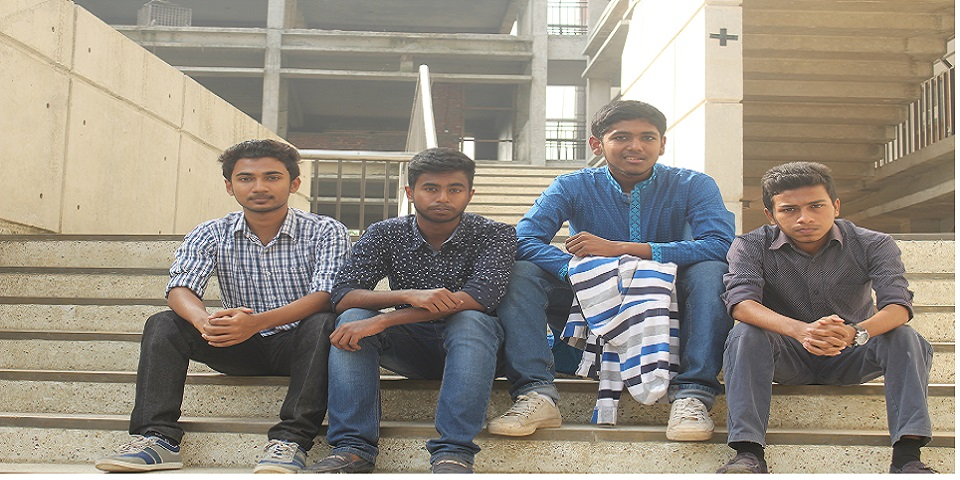

This is a example of a digital CV. In present world, If we look at the developed nations, We can see that almost all the official, local or even ordinary working people have a website. Because, they manage almost all the activities of their business,their job searching,etc through their website such as 'America'.Besides,they can communicate with world by their website. Because of this, they could communicate with the world's people. They could work. They can job in and out of the country because of thir website. They can able to show their ability,experiences and skill by their website.And for this reason, they are not unemployed.As a result, as they improve themselves, so does the country's economic development to make great contribution.
So, understand that how important the website is.
So,Make your website and show your talent around the world's people
Thank you for reading.
Travelling is my one of the best hobby.I want to travell around the world.love to be independent.I want to learn a lot of think.I want to gain a lot skill.Life is so beautiful if you arange you life beautifully.
Last updated 3 mins ago
Love to read a lot of travel sagacious book.I read a lot of in online.Besides,I do online course for achiving my skills.Alredy read some book of Zafor Iqbal sir.Grammer Nam Kakondubi and Ami Topu(by Zafor Iqbal) were so much beautiful book.
Last updated 3 mins ago
I always want to help for people. So, this time, I am working for warmthless people. I have worked as a volaunteer. It was a great experience in my life and I was happy for do something for people in this winter.
Last updated 3 mins ago
Assalamu Alaikum. This is Shaon. I am a young Inter level web design and developer. I am study at BAF shaheen College Dhaka. Now, Reading in Inter 1st year in this college. English, Bangla, Information and Communication tecnology(ICT) and Economics are my favourate subjects. I would like to study at 'The Univercity of Dhaka' in economic subject.
I would like to be 'A Expert Web Design and Developer'. And, In future, I would like to work with it at online market places. So, now, I am learning web design and development .I want to income honestly.
Actually, Going to tell about myself, I always would like to my emancipation. I want to flow like myself. I want to travell in many country. Love to do coding, playing games, browsing net, learning, reading books, sports and co-curricular activites. Now, I am a member of Dhaka Shaheen Debating Club (DSDC) and IT Club. Always want to help another person if it is possibled by me. I never want that any person is hampered by me.